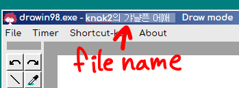
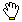

これは？
退屈で作ったお絵かきサイトです。
え？線を描くことができません。
このツールは デスクトップのWindow１０のChrome(おすすめ), Edge, FireFoxのみテスト済です。
Macやipad、モバイル機器の上の作動はちゃんと作動できないかも・・です。
保存されるファイルの名前は変更できないですか？

上のタイトルバーにUntitledになっている部分をクリックして
名前を変えておけばセーブファイルの名前に適用されます。
大きいサイズのイメージを読み込むとイメージがちゃんと見えません
Load imageはこのツールで描いた横幅600pxイメージだけぴったり表示するようにしています。
キャンバスの大きさを変更したいです。

まずPixivのDrawrのように縦幅サイズだけ変更できます。
- キャンバスの下に二つの狭い線画見えます。
- その部分のクリックしてサイズを変えてください。
- １５０から８００ピクセルまで変更できます。
ショットカットキーは？
はい, メニューのShortcut-keyをクリックすると説明が現れます。
緑色の部分は右手、青色部分は左手のショットカットキー配置です。
カスタムキーはできません・・
ツールの位置を移したいです

- 上のイメージのようにツールの上や左に小さい灰色のボックスがあります
- そのボックスをクリックすると赤いバーが現れます。
- そしてその赤いバーへドラッグするとツールの移動ができます。
- 少し 上下、左右の移動もできます。
半透明の色塗りは？

カラーパレットの大きいボックスをクリックすると
普通の色と半透明の色、順番に切り替えることができます。
スポイト で色を選択するとき大きい円が表示されますが？
で色を選択するとき大きい円が表示されますが？

その円はむしめがねです。クリックしたまま
カーソルを動くとむしめがねが１ピクセルずつ動きます。
中間の色を選択するとき便利です。
カラーパレットの下は全部白色なんですけど？

自分が作った色を保存するボックスです。
- まずスポイトで追加したい色を選択します。
- 望むボックスに長～くクリックすると色が保存されます。
- 普通のクリックは色の選択です。
小さいカーソルもあるって？
はい、右下に[ tiny]というボックスをクリックすると
tiny]というボックスをクリックすると
キャンバスで小さいカーソルが使用できます。
イメージ移動ツール をたくさん使うとイメージのふちがどんどん消えていく。
をたくさん使うとイメージのふちがどんどん消えていく。
はい、MoveToolはそうできています! 気を付けてイメージの移動をしてください。
失敗したらUndoすれば大丈夫。
この特徴を利用して、簡単にキャンバスの掃除ができます。
ハンドツールで キャンバスを移動しましたけど、元の位置にしたいです。
ズームアウトや, そのショットカットキーを何回押してください。
１倍ズームはキャンバスの位置をリセットします。
バグの報告や言いたいことがあれば、私のツイッターや Eメール(cube4none@gmail.com)でおねがいします。